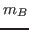
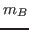

Prints various informations about the prior distribution depending on the options. If no options are provided, the command returns the list of available options. Following options are available:
tablePrints a table describing the marginal prior distributions (mean, mode, std., lower and upper bounds, HPD interval).
momentsComputes and displays first and second order moments of the endogenous variables at the prior mode (considering the linearized version of the model).
optimizeOptimizes the prior density (starting from a random initial guess). The parameters such that the steady state does not exist or does not satisfy the Blanchard and Kahn conditions are penalized, as they would be when maximizing the posterior density. If a significant proportion of the prior mass is defined over such regions, the optimization algorithm may fail to converge to the true solution (the prior mode).
simulateComputes the effective prior mass using a Monte-Carlo. Ideally the effective prior mass should be equal to 1, otherwise problems may arise when maximising the posterior density and model comparison based on marginal densities may be unfair. When comparing models, say and , the marginal densities,
 and , should
be corrected for the estimated effective prior mass
and , should
be corrected for the estimated effective prior mass
 so that the prior mass of the compared models are identical.
so that the prior mass of the compared models are identical.
plotPlots the marginal prior density.